User Interface
When you start Qt Creator, it opens to the Welcome mode, where you can:
- Open recent sessions and projects
- Create and open projects
- Open tutorials and example projects
- Read news from the online community and Qt blogs
- Create or manage a Qt Account
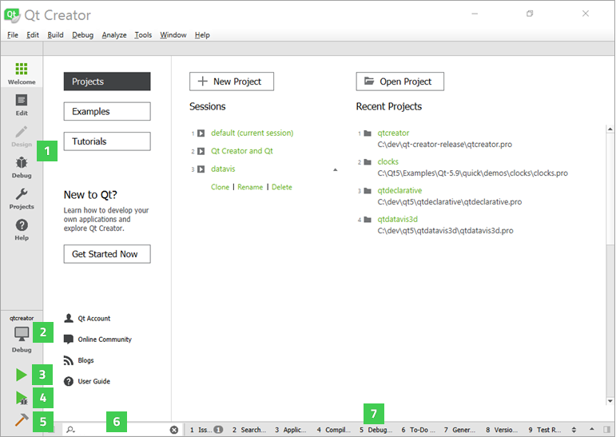
You can use the mode selector (1) to change to another Qt Creator mode.
You can use the kit selector (2) to select the kit for running (3), debugging (4), or building (5) the application. Output from these actions is displayed in the output panes (7).
You can use the locator (6) to to browse through projects, files, classes, functions, documentation, and file systems.
Modes
The mode selector allows you to quickly switch between tasks such as editing project and source files, designing application UIs, configuring how projects are built and executed, and debugging your applications. To change modes, click the icons, or use the corresponding keyboard shortcut.
To hide the mode selector and to save space on the display, select Window > Mode Selector Style > Hidden. To only show icons on the mode selector, select the Icons Only style.
The following image displays an example application in Edit mode (1) and Design mode (2).
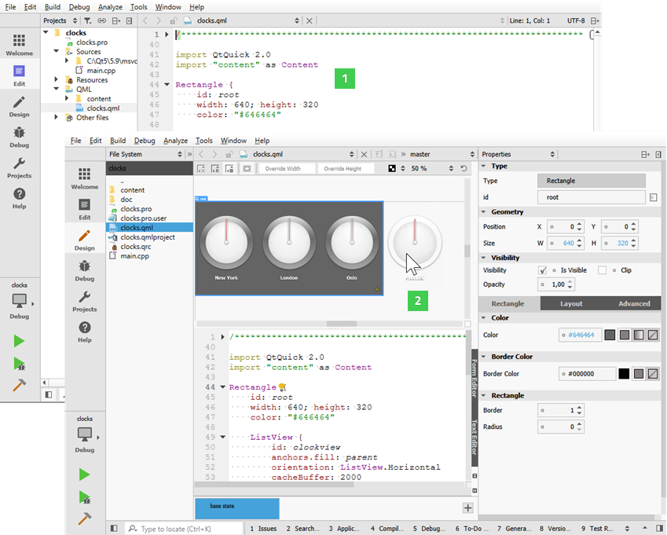
You can use Qt Creator in the following modes:
- Welcome mode for opening projects.
- Edit mode for editing project and source files.
- Design mode for designing and developing application user interfaces. This mode is available for UI files.
- Debug mode for inspecting the state of your application while debugging and for using code analysis tools to detect memory leaks and profile C++ or QML code.
- Projects mode for configuring project building and execution. This mode is available when a project is open.
- Help mode for viewing Qt documentation.
Certain actions in Qt Creator trigger a mode change. Clicking on Debug > Start Debugging > Start Debugging automatically switches to Debug mode.
Browsing Project Contents
A left and right sidebar are available in most Qt Creator modes. The availability of the sidebars and their contents depend on the mode.
In the Edit mode, you can use the sidebars to browse the project contents.
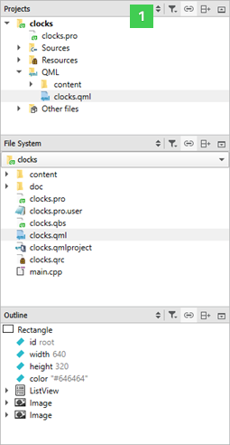
You can select the contents of the sidebars in the sidebar menu (1):
- Projects shows a list of projects open in the current session and the project files needed by the build system.
- Open Documents shows currently open files.
- Bookmarks shows all bookmarks for the current session.
- File System shows all files in the currently selected directory.
- Git Branches shows the local and remote brances for the project in the Git version control system. For more information, see Working with Branches.
- Outline shows an overview of defined types and other symbols, as well as their properties and hierarchy in a source file.
The following views display additional information about C++ code:
- Class View shows the class hierarchy of the currently open projects.
- Tests lists autotests and Qt Quick tests in the project. For more information, see Running Autotests.
- Type Hierarchy shows the base classes of a class.
- Include Hierarchy shows which files are included in the current file and which files include the current file.
For more information about the sidebar views that are only available when editing QML files in the Design mode, see Editing QML Files in Design Mode.
You can change the view of the sidebars in the following ways:
- To toggle the left sidebar, click
 (Hide Left Sidebar/Show Left Sidebar) or press Alt+0 (Cmd+0 on macOS). To toggle the right sidebar, click
(Hide Left Sidebar/Show Left Sidebar) or press Alt+0 (Cmd+0 on macOS). To toggle the right sidebar, click  (Hide Right Sidebar/Show Right Sidebar) or press Alt+Shift+0 (Cmd+Shift+0 on macOS).
(Hide Right Sidebar/Show Right Sidebar) or press Alt+Shift+0 (Cmd+Shift+0 on macOS). - To split a sidebar, click
 (Split). Select new content to view in the split view.
(Split). Select new content to view in the split view. - To close a sidebar view, click
 (Close).
(Close).
The additional options in each view are described in the following sections.
In some views, right-clicking opens a context menu that contains functions for managing the objects listed in the view.
Viewing Project Files
The sidebar displays projects in a project tree. The project tree contains a list of all projects open in the current session. For each project, the tree visualizes the build system structure of the project and lists all files that are part of the project.
Some build systems support adding and removing files to a project in Qt Creator (currently qmake and Qbs). The faithful display of the project structure allows to specify exactly where a new file should be placed in the build system. If the project is under version control, information from the version control system might be displayed in brackets after the project name. This is currently implemented for Git (the branch name or a tag is displayed) and ClearCase (the view name is displayed). You can use the project tree in the following ways:
- To open files that belong to a project, double-click them in the project tree. Files open in the appropriate editor, according to the file type. For example, code source files open in the code editor.
- To bring up a context menu containing the actions most commonly needed, right-click an item in the project tree. For example, through the menu of the project root directory you can, among other actions, run and close the project.
- To hide the categories and sort project files alphabetically, click (Filter Tree) and select Simplify Tree.
- To hide source files which are automatically generated by the build system, select Filter Tree > Hide Generated Files.
- To stop synchronizing the position in the project tree with the file currently opened in the editor, deselect
 (Synchronize with Editor). You can specify a keyboard shortcut to use when synchronization is needed. Select Tools > Options > Environment > Keyboard, and then search for Show in Explorer.
(Synchronize with Editor). You can specify a keyboard shortcut to use when synchronization is needed. Select Tools > Options > Environment > Keyboard, and then search for Show in Explorer. - To see the absolute path of a file, move the mouse pointer over the file name.
Files that are not sources or data can be still included into a project's distribution tarball by adding their paths to the DISTFILES variable in the .pro file. This way they also become known to Qt Creator, so that they are visible in the Projects view and are known to the locator and search. The Projects view contains context menus for managing projects, subprojects, folders, and files. The following functions are available for managing projects and subprojects:
- Set a project as the active project.
- Execute the Build menu commands.
- Create new files. For more information, see Adding Files to Projects.
- Add existing files and directories.
- Add libraries. For more information, see Adding Libraries to Projects.
- Add and remove subprojects.
- Search from the selected directory.
- Close projects.
For managing files and directories, the same functions are available as in the File System view. In addition, you can remove and rename files.
Viewing the File System
If you cannot see a file in the Projects view, switch to the File System view, which shows all the files in the file system.
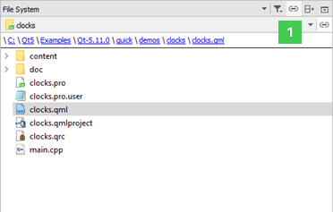
By default, the contents of the directory that contains the file currently active in the editor are displayed. To stop the synchronization, delesect the Synchronize Root Directory with Editor button.
The path to the active file is displayed as bread crumbs. You can move to any directory along the path by clicking it. To hide the bread crumbs, select (Options) and then deselect the Show Bread Crumbs check box.
To move to the root directory of the file system, select Computer in the menu (1). Select Home to move to the user's home directory. Further, you can select a project to move to an open project or Projects to open the Projects view.
By default, folders are separated from files and listed first in the view. To list all items in alphabetic order, select Options and then deselect the Show Folders on Top check box.
To also show hidden files, select Options > Show Hidden Files.
To stop the synchronization with the file currently opened in the editor, deselect Synchronize with Editor.
Use the context menu functions to:
- Open files with the default editor or some other editor.
- Open a project located in the selected directory.
- Show the file or directory in the file explorer.
- Open a terminal window in the selected directory or in the directory that contains the file. To specify the terminal to use on Linux and macOS, select Tools > Options > Environment > System.
- Search from the selected directory.
- View file properties, such as MIME type, default editor, and size.
- Create new files. For more information, see Adding Files to Projects.
- Rename or remove existing files.
- Create new folders.
- Compare the selected file with the currently open file in the diff editor. For more information, see Comparing Files.
- Display the contents of a particular directory in the view.
- Collapse all open folders.
Viewing QML Types
The Outline view shows the type hierarchy in a QML file.
- To see a complete list of all bindings, select Filter Tree > Show All Bindings.
- To stop the synchronization with the QML type selected in the editor, deselect Synchronize with Editor.
Viewing the Class Hierarchy
The Class View shows the class hierarchy of the currently open projects. To organize the view by subprojects, click (Show Subprojects).
To visit all parts of a namespace, double-click on the namespace item multiple times.
Viewing Type Hierarchy
To view the base classes of a class, right-click the class and select Open Type Hierarchy or press Ctrl+Shift+T.
Viewing Include Hierarchy
To view which files are included in the current file and which files include the current file, right-click in the editor and select Open Include Hierarchy or press Ctrl+Shift+I.
Viewing Output
The task pane in Qt Creator can display one of the following panes:
- Issues
- Search Results
- Application Output
- Compile Output
- Debugger Console
- To-Do Entries
- Version Control
- General Messages
- Test Results
Output panes are available in all modes. Click the name of an output pane to open the pane. To maximize an open output pane, click the Maximize Output Pane button or press Alt+9.
To search within the Application Output and Compile Output panes, press Ctrl+F when the pane is active. Enter search criteria in the Find field and click the left and right arrows to search down and up in the pane. In these panes, you can also use the zoom buttons to increase and decrease the text size of the output.
To open the General Messages and Version Control panes, select Window > Output Panes. To display the To-Do Entries pane, enable the Todo plugin.
For more information about the Debugger Console view, see Executing JavaScript Expressions.
Issues
The Issues pane provides lists of following types of issues:
- Build System - Errors and warnings encountered during a build.
- Clang Code Model - Errors and warnings from the current editor.
- Compile - Selected output from the compiler. Open the Compile Output pane for more detailed information.
- Debug Information - Lists debug information packages that might be missing.
- Debugger - Errors encountered while running the Valgrind code analysis tools.
- Debugger Runtime - Errors encountered when starting Qt Creator. For example, information about missing DLLs.
- Deployment - Errors encountered between building an application successfully and starting it on a device.
- My Tasks - Entries from a task list file (.tasks) generated by code scanning and analysis tools.
- Python - Runtime errors and exceptions of Python scripts.
- QML and QML Analysis - QML and JavaScript syntax errors.
The pane filters out irrelevant output from the build tools and presents the issues in an organized way. To further filter the output by type, select Filter Tree and then select a filter.
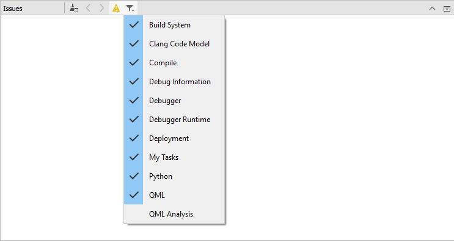
Right-clicking on a line brings up a context menu with actions that you can apply to the contents of the line. You can remove a line, copy its contents to the clipboard, or search the Internet for a solution using the contents of the line as search criteria. In addition, you can show a version control annotation view of the line that causes the error message.
To navigate to the corresponding source code, click an issue or select Show in Editor in the context menu. The entry must contain the name of the file where the issue was found.
To view more information about an issue in the Compile Output pane, select Show Output in the context menu.
To jump from one issue to the next or previous one, press F6 and Shift+F6.
Search Results
In the Search Results pane, you can search through projects, files on a file system or the currently open files:
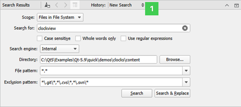
The search results are stored in the search history (1) from which you can select earlier searches.
The figure below shows an example search result for all occurrences of the search string in the specified directory.
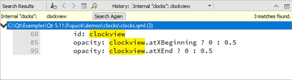
For more information about the different search options, see Finding and Replacing.
Application Output
The Application Output pane displays the status of a program when it is executed, and the debug output.
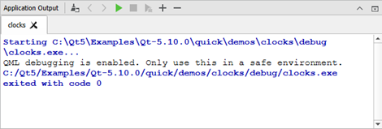
Select toolbar buttons to run applications, to attach the debugger to the running application, and to stop running or debugging.
To specify settings for displaying application output, select Tools > Options > Build & Run > General. You can select whether to open the Application Output pane on output when running or debugging applications, to clear old output on a new run, to word-wrap output, and to limit output to the specified number of lines.
Compile Output
The Compile Output pane provides all output from the compiler. The Compile Output is a more detailed version of information displayed in the Issues pane.
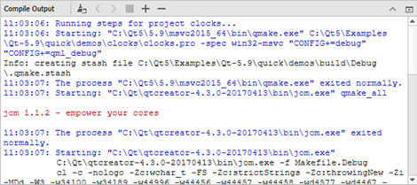
Double-click on a file name in an error message to open the file in the code editor.
Select the Cancel Build button to cancel the build.
To specify whether to open the Compile Output pane on output when building applications, select Tools > Options > Build & Run > General, and then select the Open Compile Output pane when building check box. In the Limit build output to field, you can specify the maximum amount of build output lines to display in the pane.
To-Do Entries
The To-Do Entries pane lists the BUG, FIXME, NOTE, TODO, and WARNING keywords from the current file, from all project files, or from a subproject. Click the icons on the toolbar to show only the selected keywords.
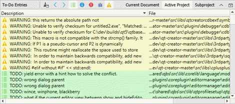
To add keywords, select Tools > Options > To-Do > Add. Set an icon and a line background color for the keyword.
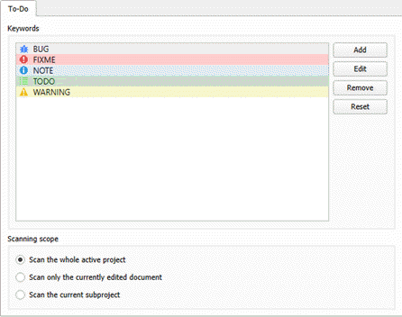
To change the icon and line background color of the selected keyword, select Edit.
To remove the selected keyword, select Remove.
To reset the list to predefined keywords, select Reset. All your changes will be permanently lost.
To determine whether the keywords in the whole project, in the current file, or in a subproject are displayed by default, select the appropriate option in the Scanning scope group.
To exclude files from scanning, select Project Settings > To-Do in the Projects mode. Select Add and enter a regular expression that matches the path to files to exclude. Use a forward slash (/) as a separator in the path also on Windows.
The Todo plugin is disabled by default. To enable the plugin, select Help > About Plugins > Utilities > Todo and restart Qt Creator.
In addition, you can open task list files generated by code scanning and analysis tools in the Issues pane. For more information, see Showing Task List Files in Issues Pane.
Changing Languages
Qt Creator has been localized into several languages. If the system language is one of the supported languages, it is automatically selected. To change the language, select Tools > Options > Environment and select a language in the Language field. The change takes effect after you restart Qt Creator.
Viewing Images
Qt Creator opens image files in the image viewer.
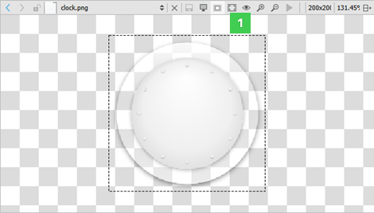
Use the toolbar buttons (1) or keyboard shortcuts to:
- Export SVG images to pixmaps
- Switch between background and outline modes
- Zoom in and out
- Fit images to screen
- Return to original size
- Play and pause animated GIF and MNG images
Exporting SVG Images
If you receive a freely scalable icon in the SVG format from an UI designer, you can export it to several images of different sizes to create a set of pixmaps. You can then use QIcon::addPixmap() to add the pixmaps to icons in different modes and states.
Navigating with Keyboard
Qt Creator caters not only to developers who are used to using the mouse, but also to developers who are more comfortable with the keyboard. A wide range of keyboard and navigation shortcuts are available to help speed up the process of developing your application.
Useful Features
For a list of useful Qt Creator features described in other parts of the documentation, see Tips and Tricks.
Platform Notes
This section describes the cases where the behavior of Qt Creator depends on the operating system it runs on.
Location of Functions
Qt Creator uses standard names and locations for standard features, such as options or preferences. In this manual, the names and locations on Windows and Linux are usually used to keep the instructions short. Here are some places to check if you cannot find a function, dialog, or keyboard shortcut on macOS when following the instructions:
| For | Look In |
|---|---|
| Tools > Options | Qt Creator > Preferences |
| Help > About Plugins | Qt Creator > About Plugins |
| Keyboard shortcuts | Qt Creator > Preferences > Environment > Keyboard |
Location of Settings Files
Qt Creator creates the following files and directories:
- QtCreator.db
- QtCreator.ini
- qtversion.xml
- toolChains.xml
- qtcreator
- qtc-qmldump
The location of the above files and directories depends on the platform:
- On Linux and other Unix platforms, the files are located in
~/.config/QtProjectand~/.local/share/data/QtProject/qtcreator. - On macOS, the files are located in
~/.config/QtProjectand~/Library/Application Support/QtProject/Qt Creator. - On Windows XP, the files are located in
%SystemDrive%\Documents and Settings\%USERNAME%\Application Data\QtProjectand%SystemDrive%\Documents and Settings\%USERNAME%\Local Settings\Application Data\QtProject. - On Windows 7, the files are located in
%SystemDrive%\Users\%USERNAME%\AppData\Roaming\QtProjectand%SystemDrive%\Users\%USERNAME%\AppData\Local\QtProject.
High DPI Scaling
The operating systems supported by Qt Creator implement high dots-per-inch (DPI) scaling at varying levels. Therefore, Qt Creator handles high DPI scaling differently on different operating system:
- On macOS, high DPI scaling is forced, which means that Qt Creator allows Qt to use the system scaling factor as the Qt Creator scaling factor.
- On Windows, if no scaling environment variables are set, Qt Creator instructs Qt to detect the scaling factor and use it for Qt Creator.
- On Linux, Qt Creator leaves it to the user to enable high DPI scaling, because the process varies so much on different distributions and windowing systems that it cannot be reliably done automatically.
To override the default approach and always enable high-DPI scaling, select Tools > Options > Environment > Enable high DPI scaling. The changes will take effect after you restart Qt Creator.